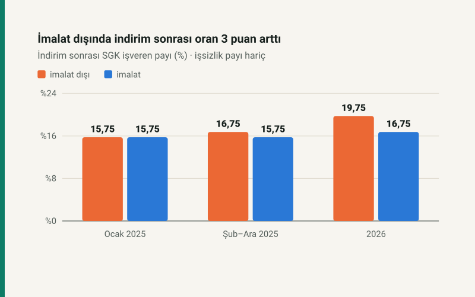

Kısa cevap
5510 sayılı Kanun m.81/ı, şartları sağlayan işverene SGK işveren payından indirim verir. Ocak 2025'e kadar 5 puandı; imalat dışında Şubat 2025'ten 4 puan (7538 sayılı Kanun), 2026'da 2 puan (7566 sayılı Kanun). İmalat (NACE C) 5 puanda kaldı.
Aynı dönemde 7566 sayılı Kanun işveren payını %20,75'ten %21,75'e çıkardı. İmalat dışındaki işveren için sonuç: indirim sonrası oran 3 puan arttı, imalatta 1 puan.
İndirim sonrası işveren SGK payı
| Dönem | İmalat dışı | İmalat |
|---|---|---|
| Ocak 2025 | %15,75 | %15,75 |
| Şubat–Aralık 2025 | %16,75 | %15,75 |
| 2026 | %19,75 | %16,75 |
Maaş düzeyine göre 2026 maliyeti
| Aylık brüt | Teşviksiz | İmalat dışı (2 puan) | İmalat (5 puan) | Yıllık fark |
|---|---|---|---|---|
| 33.030 TL (asgari) | 40.874,63 TL | 40.214,03 TL | 39.223,13 TL | 11.890,80 TL |
| 50.000 TL | 61.875,00 TL | 60.875,00 TL | 59.375,00 TL | 18.000,00 TL |
| 100.000 TL | 123.750,00 TL | 121.750,00 TL | 118.750,00 TL | 36.000,00 TL |
| 297.270 TL (tavan) | 367.871,63 TL | 361.926,23 TL | 353.008,13 TL | 107.017,20 TL |
Yıllık fark, imalat dışı işverenin imalattakine göre fazladan ödediği primdir: prime esas kazancın 3 puanı, on iki ay. Bu, imalat dışı işverenin 2025 Şubat oranlarına göre 2026'da aynı brüt için ödediği ek primle de aynıdır (%19,75 − %16,75). Asgari ücretli için ayda 990,90 TL.
Kimler yararlanır?
İndirim özel sektör işverenleri içindir; kamu işyerleri ve kamu ihalesi kapsamındaki işler yararlanamaz. Prim borcu bulunmaması ve bildirgelerin süresinde verilmesi gerekir. İndirim işsizlik işveren payına uygulanmaz. İmalattaki 5 puan 31 Aralık 2026'ya kadar geçerli; Cumhurbaşkanı bu süreyi uzatabilir.
Kendi çalışanınız için: işveren maliyeti hesaplama.
Kaynaklar
- 5510 sayılı Kanun m.81/1-(ı) ve geçici m.108.
- 7538 sayılı Kanun (Resmî Gazete, 15.01.2025) ve 7566 sayılı Kanun (Resmî Gazete, 19.12.2025).
- SGK 2026/1 Genelgesi: 2 ve 5 puanlık indirim uygulaması.
Tutarlar sitenin bordro motorundan üretilir; indirim ve işveren payı yıla ve aya göre parametrelerden okunur, otomatik testler ÇSGB tablolarıyla sabitler.
Sık sorulan sorular
SGK 5 puan indirim 2026'da devam ediyor mu?
Yalnız imalat sektöründe. İmalat dışındaki özel sektör işvereni 2026'da 2 puan indirim alır.
Prim indirimi 2 puana inince maliyet ne kadar arttı?
İmalat dışı işveren için indirim sonrası oran %16,75'ten %19,75'e çıktı: asgari ücretli başına ayda 990,90 TL, yılda 11.890,80 TL.
Asgari ücretin işverene maliyeti 2026'da ne kadar?
Teşviksiz 40.874,63 TL; imalat dışı 2 puan indirimle 40.214,03 TL, imalatta 5 puanla 39.223,13 TL.